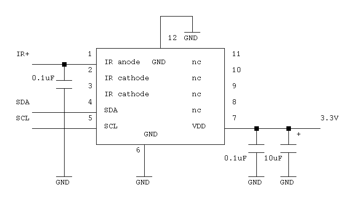
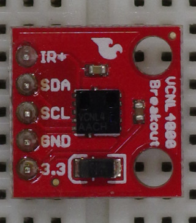
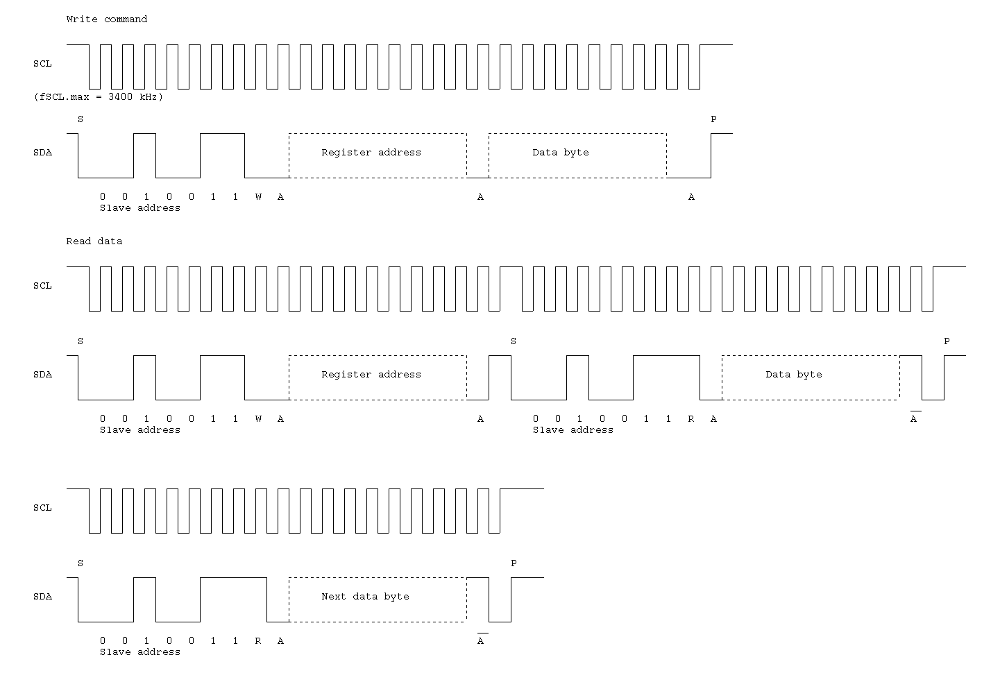

Vishay VCNL4000
(Sparkfun infrared proximity breakout)
The VCNL4000 is a proximity and ambient light sensor. It has an I2C interface.


I2C interface

| # | Register | Address |
|---|---|---|
| 0 | Command Register | 0x80 |
| 1 | Product ID Revision Register | 0x81 |
| 2 | 0x82 | |
| 3 | IR LED Current Register | 0x83 |
| 4 | Ambient Light Parameter Register | 0x84 |
| 5 | Ambient Light Result Register | 0x85 |
| 6 | Ambient Light Result Register | 0x86 |
| 7 | Proximity Measurement Result Register | 0x87 |
| 8 | Proximity Measurement Result Register | 0x88 |
| 9 | Proximity Measurement Signal Frequency Register | 0x89 |
| 10 | Proximity Modulator Timing Adjustment Register | 0x8a |